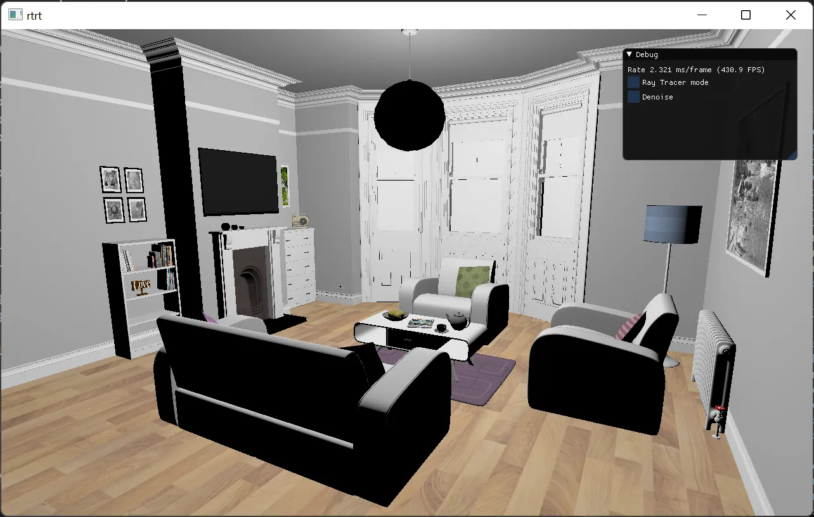
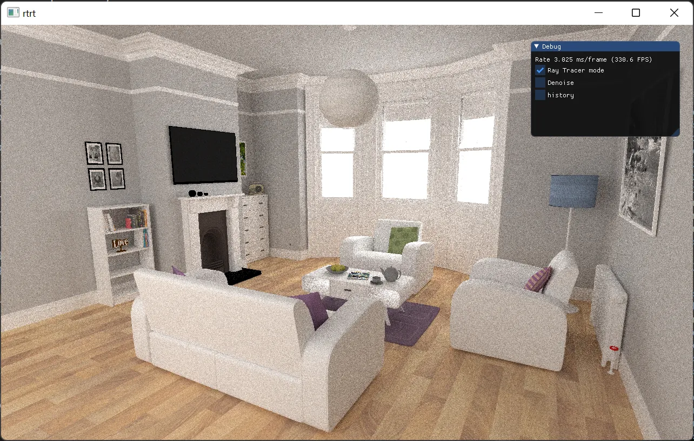
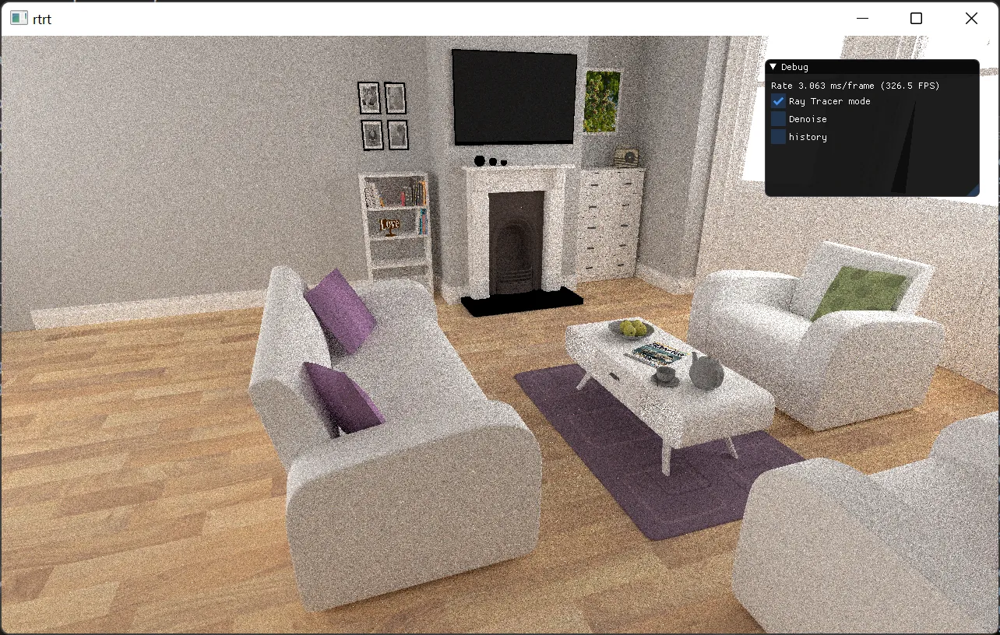
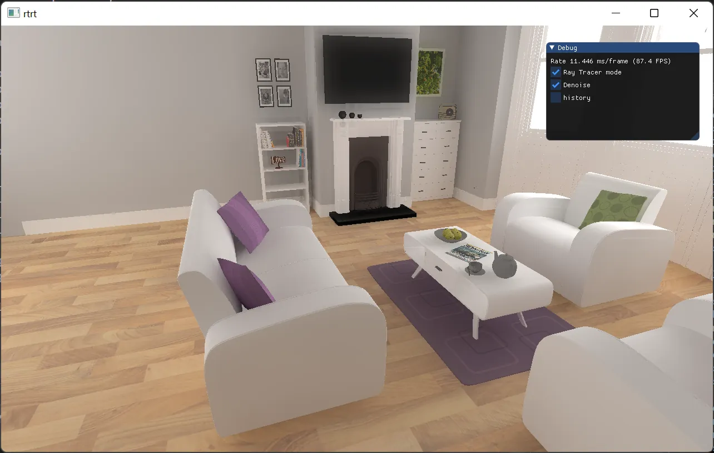

Real-Time Ray Tracing (Vulkan)
Independent project | C++, Vulkan 2022
A real-time ray tracer built in a course-provided C++ and Vulkan framework.
- Implemented Monte Carlo path tracing with importance sampling to improve pixel color convergence.
- Denoised the ray-traced image with an edge-avoiding à-trous filter.
- Cached previous-frame color, normal and depth for temporal accumulation.



